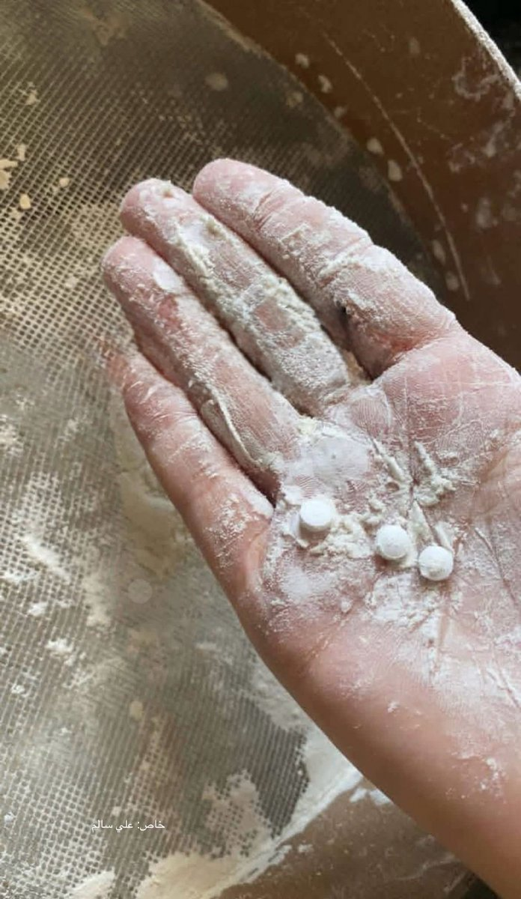

VVV
@VVV8964
美国送给巴勒斯坦的人道援助的面粉里发现了羟考酮片。
我觉得这是毒贩走私或者造假宣传，而不是很多人说的美国和以色列想要下毒。
阿片类致命性不够高，而且如果要下毒没有理由保持药片完整而不碾碎混到粉末里，更不用提做菜的时候高温可能影响药效，美国人要下毒的话会有更高明的手段，不会这么蠢

Muhammad Smiry 🇵🇸
@MuhammadSmiry
Drugs found in flour sent to Gaza. https://t.co/1SPrVrH20v